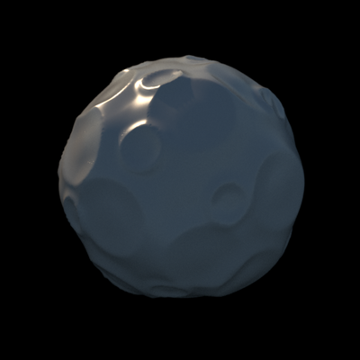

A cratered moon¶
{kind=link}
This example uses two functions, objMakeBump and
objMakeCustom. The first function is used to produce a slightly
irregular sphere by adding large Gaussian bumps to a sphere. This
model is then passed to the second function to add “craters” to the
sphere.
First, we need a function that makes the craters. The following is
the contents of the file crater.m (you can copy it and save it in
crater.m):
function C = crater(d,prm)
r = prm(1); % radius of the crater
a = prm(2); % amplitude of the crater edge
width1 = prm(3); % width of the inner slope
width2 = prm(4); % width of the outer slope
d = d-r;
C = zeros(size(d));
% The inner slope of the crater
idx = d>-width1 & d<=0;
C(idx) = a*(1+cos(2*pi*(1/(4*width1))*(d(idx))-pi/2));
% The outer slope
idx = d<width2 & d>=0;
C(idx) = a*(1+cos(2*pi*(1/(4*width2))*(d(idx))+pi/2));
Now the code for producing the model:
m = objMakeBump('sphere',[30 .05 0.2],'mindist',.35,'npoints',[128 256]);
prm = [20 0.50 0.30 .03 0.18 0.18
20 0.26 0.15 .03 0.09 0.09];
objMakeCustom(m,
@crater,prm,...
'mindist',pi/6,...
'model',m,...
'normals',true,
'moon.obj')
To get a better quality rendering of the crater rims, you might want
to increase the mesh resolution, and set the option npoints to a
higher value, for example ...,'npoints',[256 512],....
XML for rendering with Mitsuba.
<scene version="0.5.0">
<integrator type="path"/>
<sensor type="perspective">
<transform name="toWorld">
<lookAt origin="3, 3, 3" target="0, 0, 0" up="0, 1, 0"/>
</transform>
<float name="farClip" value="20"/>
<sampler type="stratified">
<integer name="sampleCount" value="128"/>
</sampler>
<film type="hdrfilm">
<integer name="width" value="512"/>
<integer name="height" value="512"/>
<rfilter type="gaussian"/>
</film>
</sensor>
<shape type="obj">
<string name="filename" value="moon.obj"/>
<bsdf type="roughplastic">
<srgb name="reflectance" value="#eeddbb"/>
</bsdf>
<transform name="toWorld">
<rotate y="1" angle="280" />
</transform>
</shape>
<emitter type="sunsky">
<float name="scale" value="2"/>
<float name="hour" value="17" />
</emitter>
</scene>
Please note that this is just an example. There’s no guarantee these are in any way reasonable, or sensible, modeling or rendering parameters for a particular application.